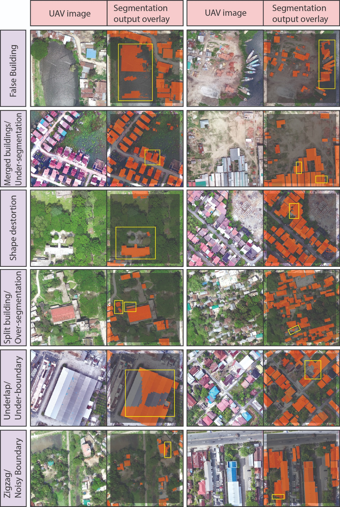

GeoAI-Based Post-Segmentation Quality Control for UAV-Derived Building Footprints
Object-level quality control for UAV-derived building footprints before they are accepted into a GIS database.
- Research focus
- Reliable post-segmentation quality control for building-footprint databases.
- Methods & data
- UAV RGB imagery · U-Net · SAM-LoRA · vector regularization · geometric, contextual and raster features · machine learning.
- Current stage
- Completed · first-author manuscript under review in a Q1 journal.

Research rationale and objectives
Research overview
U-Net and SAM-LoRA masks are vectorized, regularized and described by 24 geometric, contextual and raster features. Decision Tree, Random Trees and XGBoost screening is evaluated on a geographically independent test site.
1. Research motivation
Why segmentation accuracy alone is insufficient
Pixel-level segmentation models can produce visually convincing building masks while still generating polygons that are fragmented, merged, distorted, incomplete, or contextually implausible. These errors become especially important when predicted masks are converted into operational GIS databases for urban planning, infrastructure management, exposure assessment, and spatial analysis.
Conventional evaluation commonly emphasizes image-level or pixel-level performance. This research addresses the additional need for object-level quality assurance by examining the geometry, local spatial context, and underlying image characteristics of individual building-footprint candidates.
2. Research objectives
From segmentation output to reliable GIS objects
Develop an object-level quality-control framework. Convert UAV-derived segmentation outputs into candidate GIS objects and evaluate their reliability using multidomain predictors.
Assess geographic transferability. Train the quality-screening models on multiple study sites and evaluate them on a geographically independent test area.
Methods, dataset and evidence
3. Data and methods
Integrated deep-learning, vector-GIS, and machine-learning workflow
| Research component | Implemented approach |
|---|---|
| UAV data | Five high-resolution RGB orthophoto sites with approximately 15 cm spatial resolution. |
| Segmentation models | U-Net with a ResNet-34 backbone and SAM-LoRA with a ViT-B backbone. |
| Vector preparation | Mask-to-polygon conversion, geometric regularization, geometry cleaning, manual quality labelling, and spatially exclusive candidate consolidation. |
| Object descriptors | Twenty-four predictors comprising 12 geometric, 6 contextual, and 6 raster-derived variables. |
| Quality-screening models | Comparative evaluation of Decision Tree, Random Trees, and XGBoost classifiers. |
| Transferability design | Sites B–D used for training and Site E reserved as a geographically independent test site. |
| Evaluation | Accuracy, precision, recall, specificity, F1-score, balanced accuracy, MCC, Cohen’s κ, and database-level quality indicators. |
4. Experimental dataset and validation
Independent-site assessment of spatial transferability
The final modelling dataset contained 12,860 candidate footprints. A total of 8,698 candidates from Sites B–D were used for model development, while 4,162 candidates from Site E were retained for independent geographic testing. This design evaluates whether the learned quality patterns transfer beyond the locations used during model training.
| Dataset component | Role | Candidate footprints |
|---|---|---|
| Sites B–D | Model training and development | 8,698 |
| Site E | Independent geographic testing | 4,162 |
| Total | Object-level quality-control dataset | 12,860 |
5. Selected research findings
Improved screening and database-level quality
The strongest reported configuration demonstrated that object-level machine-learning screening can substantially improve the reliability of retained building-footprint records. The evaluation combined conventional classification measures with database-oriented indicators that describe the quality of the footprints remaining after screening.
| Reported indicator | Result | Interpretation |
|---|---|---|
| Accuracy | 95.31% | High independent-site classification performance. |
| F1-score | 91.06% | Strong balance between precision and recall for erroneous-candidate screening. |
| Matthews correlation coefficient | 0.880 | Strong agreement across the two quality classes. |
| Retained error rate | 27.32% → 4.62% | Substantial reduction in erroneous footprints remaining in the screened database. |
| Database purity | 72.68% → 95.38% | Marked improvement in the proportion of acceptable retained footprints. |
| Relative error reduction | 83.09% | Large reduction in database error relative to the unscreened candidate set. |
Contribution and applications
6. Research contribution
Methodological and practical value
- Object-level quality-control framework design
- UAV imagery and segmentation-output preparation
- Vectorization, regularization and candidate consolidation
- Geometric, contextual and raster feature engineering
- Machine-learning screening and independent-site validation
- Result interpretation and first-author manuscript preparation
7. Potential applications
Where the framework can support practice
- Building-database quality assurance
- Urban and settlement mapping
- Infrastructure and utility inventories
- Disaster-exposure assessment
- Human-in-the-loop review of AI-derived vectors
8. My contribution
Research responsibilities
- Research conceptualization and methodological design
- UAV-imagery preparation and building-footprint processing
- Deep-learning output preparation and vector regularization
- Quality-labelling strategy and spatially exclusive data consolidation
- Geometric, contextual, and raster-derived feature development
- Machine-learning model development and independent-site evaluation
- Database-level quality assessment and result interpretation
- Scientific visualization and first-author manuscript preparation